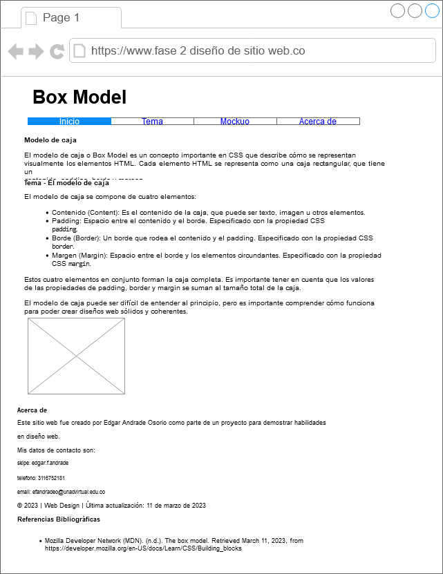

Inicio
El modelo de caja o Box Model es un concepto importante en CSS que describe cómo se representan visualmente los elementos HTML. Cada elemento HTML se representa como una caja rectangular, que tiene un contenido, padding, borde y margen.
Tema - El modelo de caja
El modelo de caja se compone de cuatro elementos:
- Contenido (Content): Es el contenido de la caja, que puede ser texto, imagen u otros elementos.
- Padding: Espacio entre el contenido y el borde. Especificado con la propiedad CSS
padding. - Borde (Border): Un borde que rodea el contenido y el padding. Especificado con la propiedad CSS
border. - Margen (Margin): Espacio entre el borde y los elementos circundantes. Especificado con la propiedad
CSS
margin.
Estos cuatro elementos en conjunto forman la caja completa. Es importante tener en cuenta que los valores de las propiedades de padding, border y margin se suman al tamaño total de la caja.
El modelo de caja puede ser difícil de entender al principio, pero es importante comprender cómo funciona para poder crear diseños web sólidos y coherentes.

Imagen tomada de: Mozilla Developer Network (MDN)
Mockup
Acerca de
Este sitio web fue creado por Edgar Andrade Osorio como parte de un proyecto para demostrar habilidades en diseño web.
Mis datos de contacto son:
skipe: edgar.f.andrade
telefono: 3116752181
email: efandradeo@unadvirtual.edu.co